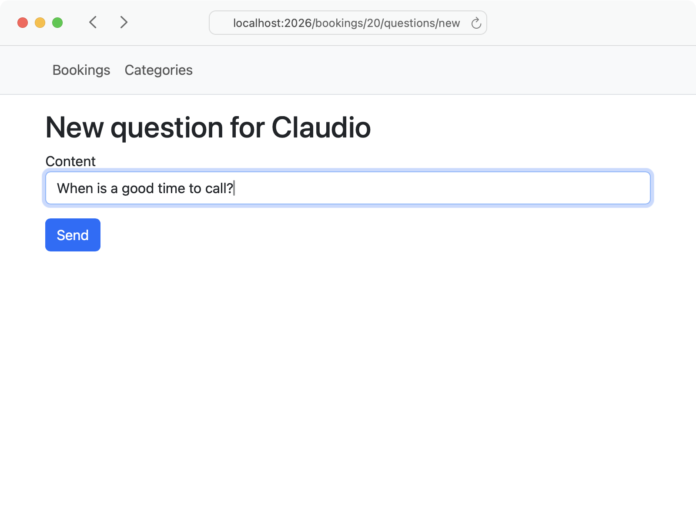
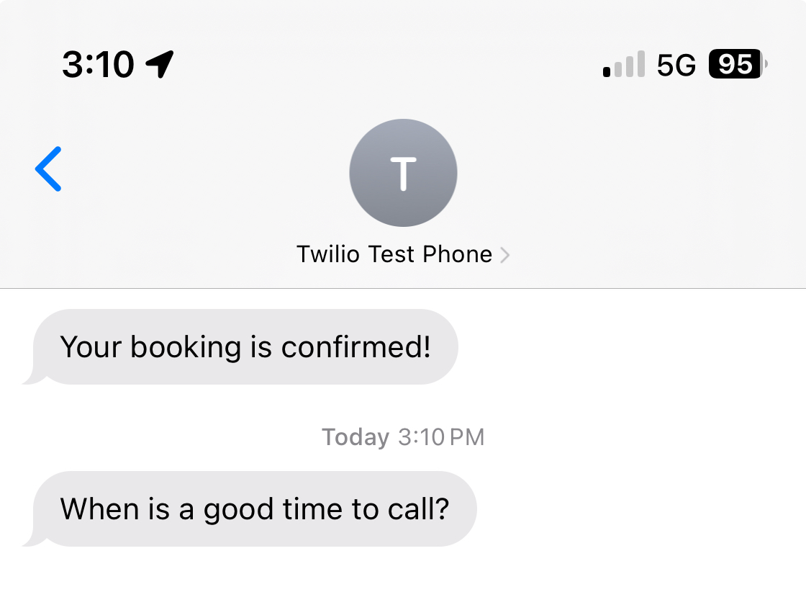

<p>We want the question to be sent to the homeowner via SMS.</p>
<mark>Note: this is the end of Part 1 where we assume that we are a single handyman. Next we will become a franchise. And maybe I reduce to 20 episodes</mark>

<ol style="padding-left: 0; list-style-position: inside">
  <li style="margin-top: 0.75rem"><a href="#"><span class="badge rounded-pill bg-primary">▶︎</span></a> Create a Notifiable concern for the Question model.</li>
  <li style="margin-top: 0.75rem"><a href="#"><span class="badge rounded-pill bg-secondary-subtle">▶︎</span></a> Adjust the recipient and content for the question.</li>
  <li style="margin-top: 0.75rem"><a href="#"><span class="badge rounded-pill bg-secondary-subtle">▶︎</span></a> Remove duplication using a parent concern.</li>
  <li style="margin-top: 0.75rem"><a href="#"><span class="badge rounded-pill bg-secondary-subtle">▶︎</span></a> Send SMS in a background job.</li>
</ol>

<br>

<div class='row row-cols-1 row-cols-md-2 g-4 mb-3 text-center'>
  <div class='col'><div class='card text-bg-success'>
    
  </div></div>
  <div class='col'><div class='card text-bg-success'>
    
  </div></div>
</div>
  